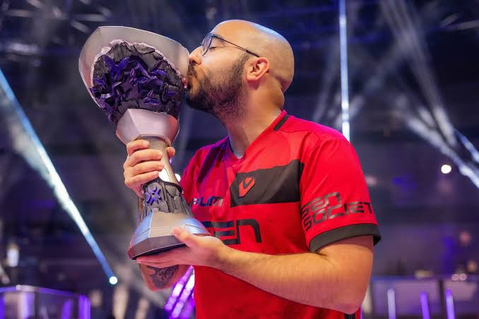
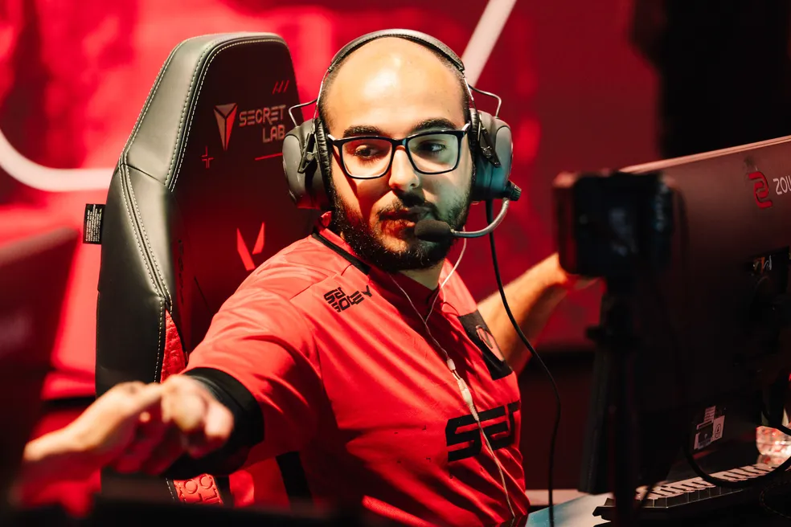
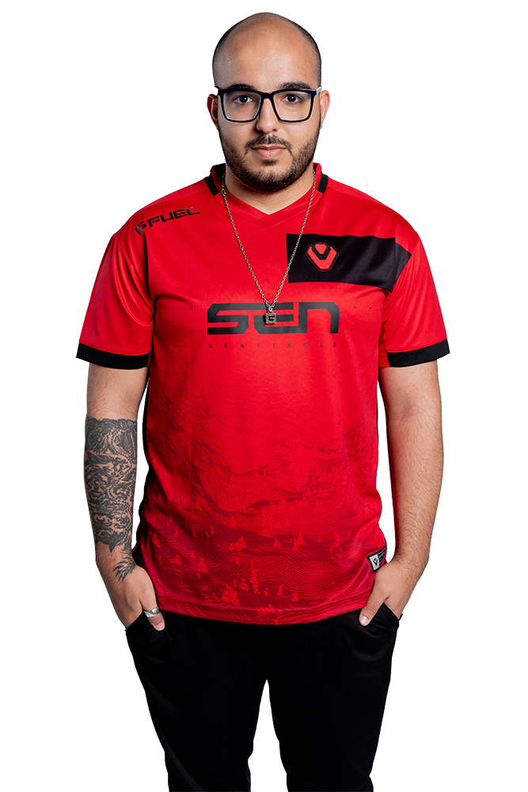
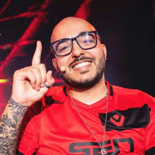

Sentinels
Aposentadoria

A trajetória de Gustavo “Sacy” Rossi na organização norte-americana
Sentinels começou oficialmente em 15 de outubro de 2022, logo após ele
ter se sagrado campeão mundial com a LOUD . A transferência, realizada
em conjunto com seu companheiro pANcada, foi cercada de grandes
expectativas, já que a Sentinels buscava se reestruturar após uma
temporada de 2022 abaixo do esperado . Para Sacy, essa mudança
representou um marco em sua vida pessoal e profissional; ele descreveu
a ida para Los Angeles como uma das melhores decisões de sua carreira,
destacando o suporte "surreal" da organização, que cuidou de todos os
detalhes da transição para ele e sua esposa, incluindo um apartamento
totalmente mobiliado, permitindo que ele se preocupasse exclusivamente
em jogar .
Apesar do entusiasmo inicial, a temporada de 2023 foi considerada
insatisfatória para o elenco . A equipe enfrentou dificuldades para
encontrar sua melhor forma, o que resultou em resultados aquém das
expectativas da torcida e da própria organização . No entanto, esse
período de instabilidade serviu como base para uma reformulação que
renderia frutos significativos no ano seguinte, mantendo Sacy como uma
peça central de liderança e experiência estratégica para o time .


O ano de 2024 marcou o grande ressurgimento da Sentinels e a
consagração definitiva de Sacy no cenário internacional. Sob sua
liderança, a equipe venceu o VCT Americas Kickoff 2024, derrotando
justamente sua antiga equipe, a LOUD, na final . O auge dessa fase
ocorreu em março de 2024, com a conquista do VALORANT Masters Madrid,
onde a Sentinels superou a Gen.G por 3 a 2 em uma final épica . Com
essa vitória, Sacy alcançou um feito histórico e único: tornou-se o
primeiro e único jogador brasileiro a conquistar os dois títulos
internacionais de maior prestígio do VALORANT (o Champions in 2022 e o
Masters in 2024) .
A jornada competitiva de Sacy na Sentinels encerrou-se após o VALORANT
Champions 2024, onde a equipe terminou em uma respeitável 4ª colocação
após ser eliminada pela Team Heretics . Em setembro de 2024, Gustavo
surpreendeu a comunidade ao anunciar oficialmente sua aposentadoria
dos palcos profissionais, decidindo não renovar seu contrato para a
temporada de 2025 . Ele deixou a organização com o sentimento de dever
cumprido, tendo conquistado tudo o que era possível na modalidade
antes de iniciar uma nova fase como criador de conteúdo no Brasil .